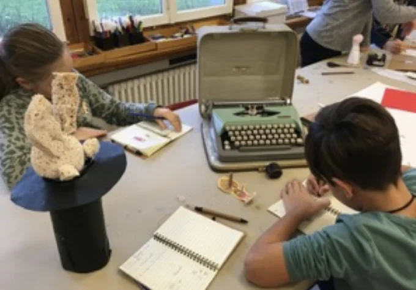

Schulhausbespielung / Konzept · Workshops · Begleitung · Inszenierung
Museum der entdeckten W/Orte

Das Projekt
Ein Projekt rund um Worte und die Orte der Schule. In den Klassen und im Schulhaus entstanden viele einzigartige Projekte, die schliesslich ins «Museum der entdeckten W/Orte» fanden. In zweijähriger Zusammenarbeit mit der Primarschule Buchwiesen in Zürich und dem Theater PurPur.
Schulhausbespielung
Kreativer Raum für Schulen: Ob über einen kürzeren oder längeren Zeitraum – gemeinsam verwandeln wir Schulhäuser in lebendige Orte, an denen überall geprobt, gespielt und das Geschaffene schliesslich präsentiert wird.
Die Formate werden individuell mit allen Beteiligten abgestimmt und passen sich an die Gegebenheiten vor Ort an.
Ein Projekt anfragen ↗Nächstes ProjektFlucht ins Weltall